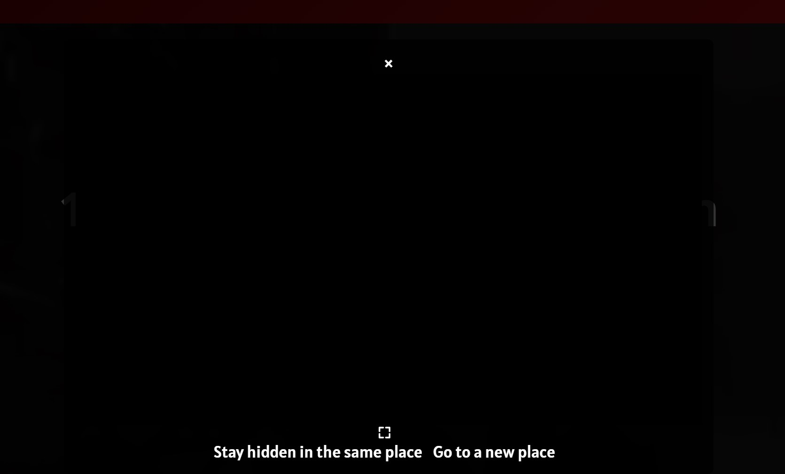
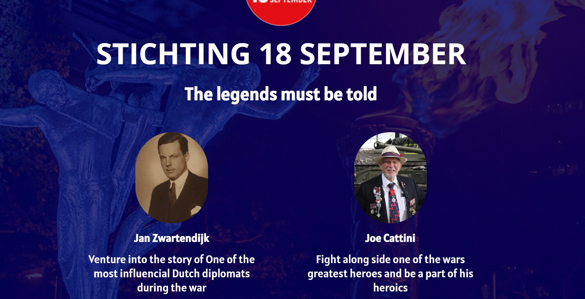
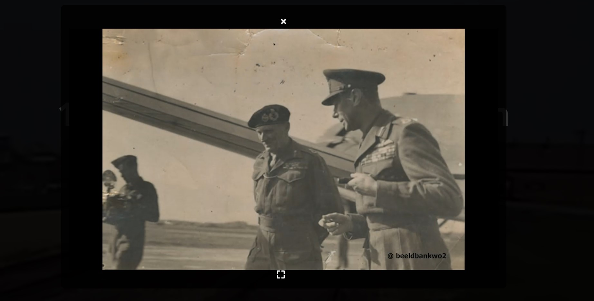
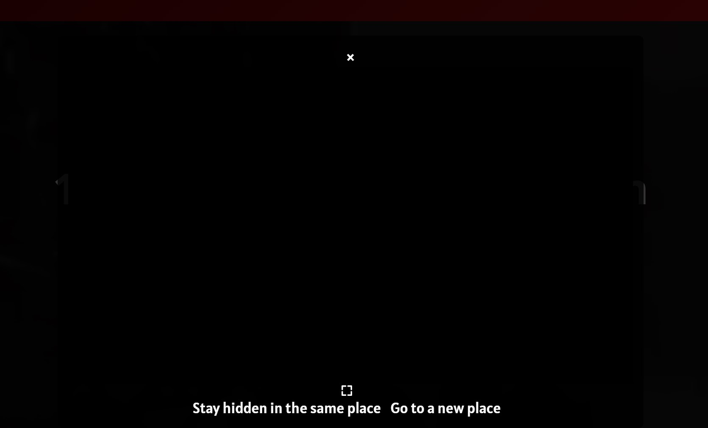
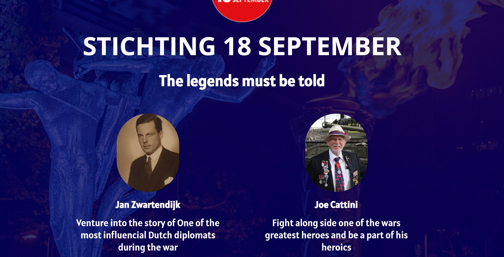
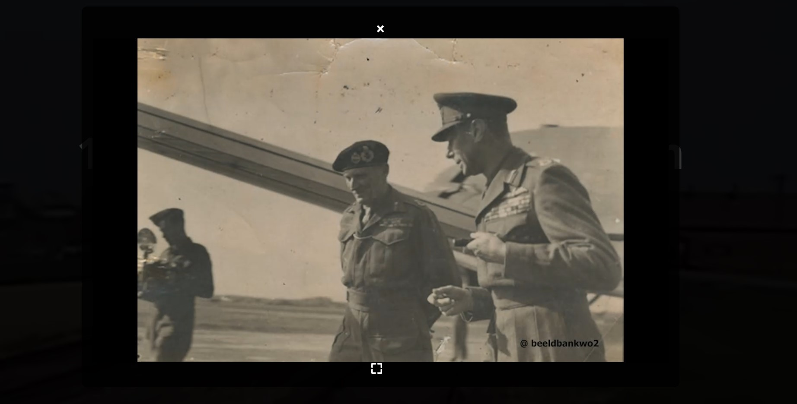

18th Semptember Foundation
My team and I developed a website for the 18th September Foundation, an organization closely tied to the city of Eindhoven.
The foundation's mission is to educate and commemorate the events and heroes of World War II, with a focus on the liberation of the
Netherlands and Eindhoven, as well as the surrounding areas. We were given considerable creative freedom in how to present the topic,
so we decided to create an interactive story. This feature allows users to participate in key events, making decisions that either follow historical outcomes
or explore alternative scenarios.
The project followed the double diamond structure (Discover, Define, Develop, Deliver), and for the development phase, we adopted the Scrum methodology.
My primary contributions were during the Define and Develop phases, where I worked on prototyping and later took charge of the
main homepage layout and the script behind the interactive story.
This project was particularly valuable because it marked my first experience working for an organization rather than an individual client.
This required a different approach in terms of responsibilities and communication. Additionally, the subject matter was of great significance,
making it a major milestone in my educational journey.
 




